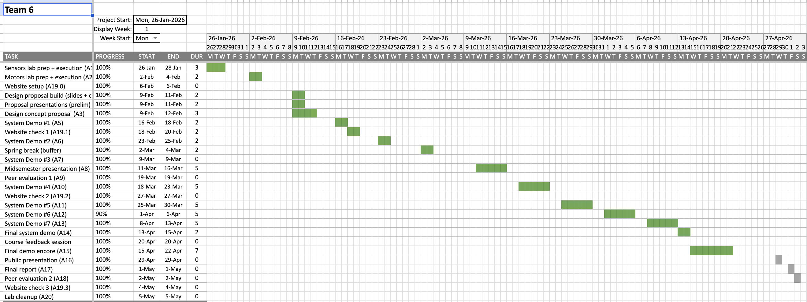

Schedule
The semester schedule is organized around progressive system demos, final integration, public presentation preparation, and Check 3 website documentation.

Milestone Tracker
| Milestone | Date | Main Deliverables | Status |
|---|---|---|---|
| System Demo 2 | February 26, 2026 | Procurement list finalized, wiring review completed, subsystem purchasing aligned | Complete |
| System Demo 3 | March 9, 2026 | Single-leg IK demo, controller demo, physical leg prototype, near-final CAD | Complete |
| System Demo 4 | March 16, 2026 | MuJoCo simulation, Pi camera bring-up, wiring bench, controller-to-servo bench work | Complete |
| System Demo 5 | March 23, 2026 | AprilTag detection on Pi 5, single-leg hardware gait path, more leg hardware assembled | Complete |
| System Demo 6 | April 6, 2026 | Wiring cleanup, Pi-to-ESP32 integration, broader multi-leg hardware bring-up | Complete |
| Final System Demo | April 15, 2026 | Presented final integrated robot status, including six-leg powered IK actuation and remaining locomotion limits | Complete |
| Final System Demo Encore | April 22, 2026 | Repeated final demo with seated-load evidence and updated integration results | Complete |
| Public Presentation | April 29, 2026 | Prepare concise final story, integration evidence, and known limitations | In Progress |
| Website Check 3 | May 4, 2026 | Publish final implementation status, demo videos, dashboard screenshots, and performance matrix | In Progress |
Parts / Procurement Snapshot
This table records the parts families used by the final architecture. Detailed cost accounting should be added from the final report or budget sheet when available.
| Subsystem | Current Selection | Management Notes |
|---|---|---|
| Actuation | High-torque servo set for six 3-DOF legs, PCA9685 PWM boards, extension cabling | Largest cost and wiring-complexity driver |
| Compute | Raspberry Pi 5 with active cooling | Central planning, dashboard, and perception computer |
| Perception | Pi camera module and AprilTag target workflow | Sensor package for calibration and vision work |
| Embedded Control | Xbox controller input path through Raspberry Pi, ESP32 control layer, and PWM drivers | Manual input is handled on the Pi; the ESP32 receives servo-angle commands for hardware-side PWM output |
| Mechanical | Rectangular chassis, servo brackets, leg links, bearings, and fasteners | Major fabrication and assembly workstream |
| Power | Three OVONIC 2S LiPo 50C 6200mAh 7.4V packs, three power-distribution boards, regulators, wiring, and connectors | Final layout powers two legs from each battery after the original two-pack NiMH setup could not support all six legs |
Issue Log
The issue log records concrete integration problems discovered during staged demos and how the team resolved them.
| Issue # | Date Found | Date Fixed | Origin | Description | Resolution |
|---|---|---|---|---|---|
| 1 | 2026-03-09 | 2026-03-09 | IK visualization | Right-side leg coordinate transforms were mirrored, causing incorrect gait behavior. | Corrected body-to-leg transform handling and verified with the controller demo and single-leg visualization. |
| 2 | 2026-03-16 | 2026-03-16 | MuJoCo bring-up | Tibia angle convention between the IK solver and MuJoCo caused unstable initial poses. | Standardized the tibia conversion path and updated the standing keyframe / actuator command mapping. |
| 3 | 2026-03-23 | 2026-03-23 | Pi camera integration | Camera frames arrived in the wrong color format, so AprilTag detection silently failed. | Explicitly configured the Pi camera pipeline for OpenCV-friendly output before running detection. |
| 4 | 2026-03-23 | 2026-03-23 | Bench hardware test | A femur servo direction was inverted relative to the software configuration. | Updated servo direction settings in configuration and revalidated the single-leg bench controller. |
| 5 | 2026-04-14 | 2026-04-21 | Full-system power test | The original power system used two Zeee 8.4V 3000mAh NiMH RC battery packs and could not reliably power all six legs at once before the April 15 final demo. | Replaced the supply with three OVONIC 2S LiPo 50C 6200mAh 7.4V packs and three power-distribution boards. Each battery now powers two legs, which enabled all six legs to work before the April 22 final demo encore. |
| 6 | 2026-04-22 | — | Final demo encore | With the revised power system, all six legs can actuate under IK control, but stable body translation was still not repeatably demonstrated; in-place rotation remained limited / unverified. | Open; remaining work is gait timing, foot contact, load distribution, traction, and mechanical tuning under full-system conditions. |
Open Management Items
Public Presentation Package
Finish the concise public-facing story, demo evidence selection, and limitation statement for April 29, 2026.
Website Check 3
Keep final system status, media, documents, and rubric evidence synchronized before the May 4, 2026 check.
Document Uploads
Add the final report, quad chart, and remaining ILR files as soon as those artifacts are available.
Post-Demo Risk Log
Preserve unresolved locomotion, power, and reliability risks as follow-up items instead of hiding them in build pages.